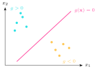

and is
and is  , a hyperplane when the are linear.
, a hyperplane when the are linear.Definition
Decision rule: . Decision regions partition the feature space. For two classes a single suffices: if .
Linear discriminants: ; the boundary is a hyperplane. Any monotonic transformation gives the same classifier (e.g. of probabilities).
Picture

Worked example
Two classes with means , and minimum-distance discriminants : , . Boundary : , i.e. , the perpendicular bisector of the two means. The pixel : , : class 1.
Intuition
Each class has a scoring function; a pixel goes to whichever class scores it highest. Classifiers differ only in how they build the scores.
Pitfall
Linear boundaries cannot separate classes arranged like XOR or a class surrounding another; non-linear discriminants (quadratic Gaussian, neural networks, kernels) are then needed.